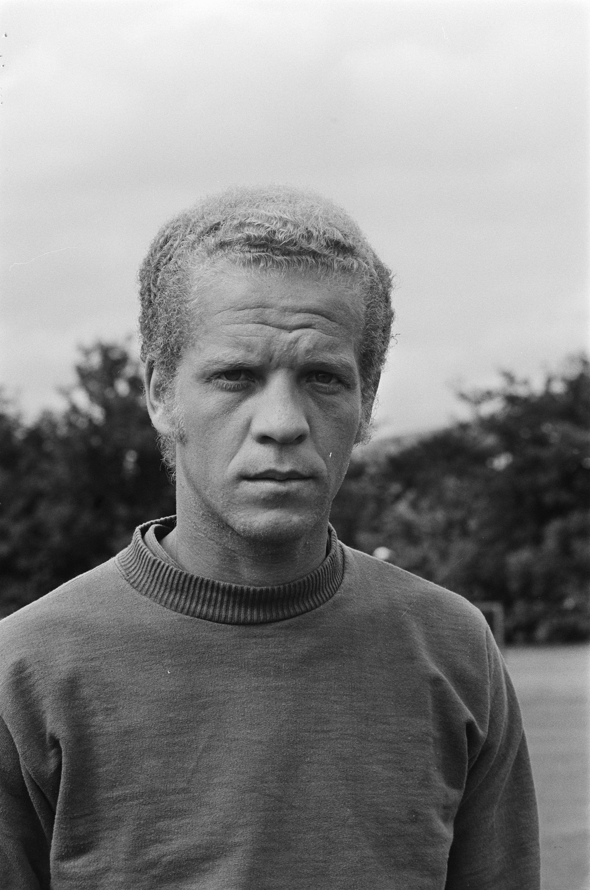
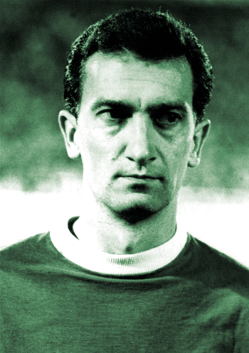
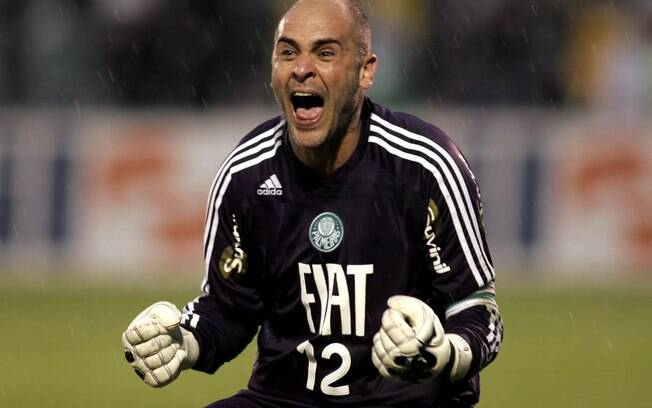

Poucos jogadores na história do futebol foram tão talentosos ao unir perfeitamente classe e poder de decisão como Ademir da Guia. E menos jogadores ainda se identificaram tanto com um único clube como ele. A elegância, o ritmo cadenciado, as passadas largas, a visão de jogo, a habilidade com a bola nos pés e a capacidade de conquistar os mais variados troféus ao longo de 16 temporadas vestindo a camisa verde conduziram este carioca, nascido no emblemático ano de 1942, ao altar dos ídolos eternos do Palmeiras.
Com a Primeira Academia, e já tendo Dudu como parceiro inseparável no meio-campo, faturou ainda o Torneio Rio São Paulo de 1965, o Paulista de 1966 e os Brasileiros de 1967 (Taça Brasil e Torneio Roberto Gomes Pedrosa). Com a Segunda Academia, que tinha como protagonistas também Leão, Eurico, Luis Pereira, Alfredo, Zeca, Edu, Leivinha, César, Nei e, mais tarde, Jorge Mendonça, conquistou os Brasileiros de 1969, 1972 e 1973, os Torneios Ramón de Carranza-ESP de 1969, 1974 e 1975 e os Paulistas de 1972, 1974 e 1976.
Em 1977, aos 35 anos de idade, Ademir decidiu deixar o futebol após apresentar dificuldades respiratórias. Durante os 16 anos em que atuou pelo Alviverde, o Divino disputou 902 partidas (512 vitórias, 233 empates e 157 derrotas) e balançou as redes dos adversários 155 vezes. Estes números o colocam como o jogador que mais atuou pelo clube e o terceiro maior artilheiro da história palmeirense, atrás apenas de Heitor (317) e César Maluco (182).
A imagem mostra o ídolo do Palmeiras Ademir da Guia - O Divino.
Aguerrido, brigador e preciso no desarme, Dudu protegia a zaga alviverde como um gladiador incansável. Foi assim que, em 12 temporadas, tornou-se o terceiro jogador que mais entrou em campo na história do Palmeiras com mais de 600 jogos. Também se sagrou tricampeão paulista, pentacampeão brasileiro (feito que só ele e Ademir da Guia alcançaram pelo Verdão), disputou a Copa de 1974 na Alemanha, conquistou um título como técnico e foi imortalizado, em 2016, com um dos seis bustos de bronze que hoje ornam a sede social do clube.
Olegário Tolói de Oliveira nasceu em Araraquara-SP e iniciou a carreira profissional em 1959, na Ferroviária, já com o apelido que recebeu do avô, sr. Redente Toloi. Depois de cinco anos brilhando no interior, chamou a atenção do Palmeiras e foi contratado em 31 de março de 1964, curiosamente na data em que eclodiu o golpe militar no Brasil, fato que dificultou o retorno de Dudu a Araraquara porque a estação ferroviária fora fechada. A sorte foi que o hotel onde a Ferroviária costumava se hospedar ficava próxima à estação, e o gerente era seu conhecido. Assim, mesmo sem dinheiro para pagar a diária, o garoto teve onde dormir.
Entre o final dos anos 1960 e início dos anos 1970, o Palmeiras passou por uma fase de transformação. A saída de craques como Valdir, Djalma Santos, Ferrari, Servílio e Tupãzinho abriu espaço para Leão, Eurico, Luis Pereira, Alfredo, Zeca, Edu Bala, Leivinha e Nei, que se juntaram a Cesar Maluco (contratado em definitivo após o empréstimo de 1967), Ademir da Guia e ao próprio Dudu para formar a célebre Segunda Academia.
Dudu anunciou sua aposentadoria aos 36 anos. A derradeira partida aconteceu em 24 de janeiro de 1976, no empate entre Palmeiras e Portuguesa por 3 a 3, no Palestra Italia, em partida válida pelo Torneio Laudo Natel. No mesmo ano, Dudu foi convidado para ser o treinador do time e deu sequência ao trabalho de Dino Sani, assumindo o cargo em maio de 1976 e conduzindo a equipe a mais uma taça estadual. Ao todo, comandou o Verdão em três oportunidades (1976/77, 1981 e 1990/91), totalizando 142 jogos (75 vitórias, 45 empates e 22 derrotas).
A imagem mostra o ídolo do Palmeiras Dudu Olegário.
Marcos veio do interior sem alarde para jogar no Sub-20 e ficou anos na reserva do time profissional antes de, como um supersônico em ascensão, conduzir o Palmeiras ao inédito título da Libertadores de 1999 e representar o Verdão na conquista da Copa do Mundo de 2002. Mais do que isso: em tempos em que atuar na Europa virou quase uma obsessão dos jogadores brasileiros, os 20 anos de dedicação exclusiva ao clube de coração fez dele o grande ídolo de uma geração, canonizado e reverenciado em procissão ao pendurar as luvas. Tornou-se o “São Marcos de Palestra Itália”.
A titularidade absoluta veio em 1999. Após nova contusão de Velloso, Marcos assumiu a posição durante a disputa da Copa Libertadores, pegou pênaltis, operou diversos milagres e não saiu mais do time. Foi o principal jogador do Verdão na inédita conquista sul-americana, inclusive sendo o primeiro goleiro na história eleito como o melhor da competição.
O casamento definitivo entre Marcos e Palmeiras aconteceu no final de 2002. Já campeão mundial com a seleção brasileira, ele não conseguiu evitar a queda do Palmeiras para a Série B do Brasileiro no segundo semestre. Mesmo assim, demonstrando um comprometimento fora do comum no futebol moderno, decidiu rejeitar uma oferta do Arsenal, da Inglaterra, e disputou a Segunda Divisão em 2003, reconduzindo o clube à elite.
No total, São Marcos entrou em campo 533 vezes pelo Palmeiras. Poderia ter atuado muito mais se não fossem as inúmeras contusões que o vitimaram, sobretudo no pulso direito. A temporada em que mais atuou foi 2008, com 60 partidas, justamente o ano em que conquistou seu último título na carreira. Pela seleção brasileira, foram 29 partidas e três títulos: Copa do Mundo de 2002, Copa das Confederações de 2005 e Copa América de 1999.
A imagem mostra o ídolo do Palmeiras São Marcos, o Milagreiro de Palestra Itália.